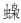

千军易得，一将难求。古代打仗，将遇良材是第一位的。古代战争史，似乎就是一部“名将史”。我们读《三国》《水浒》《说岳》等，千军万马都在其次，关键看将领是否“有万夫不当之勇”，是否“虽千万人，吾往矣”，是否“百万军中取上将首级，如探囊取物一般”。里头或有小说家者流的夸张，但也是从古代战争特点而来。眼下弘光四镇，领衔者有没有古大将之风，配不配得上这样的担子，自然需要考量。
且从相对平淡的刘良佐说起。前面我们介绍了他一些功勋，从中约略窥见他的戎马生涯，不过那些叙述极简，史家们对他较细的笔墨都集中在降清后，那时他干了一件“遗臭万年”的事——亲自率军赶到太平府板子矶，在那里捉住弘光皇帝朱由崧再把他押回南京。他就此留下的形象，不仅是个“逆臣”，而且让人觉得苟命贪生。不过，在有关他的不多而草草带过的叙述中，我捕捉到一点特别的信息。那是他的绰号“花马刘”——“尝乘花马陷阵，故亦号‘花马刘’云”[15]，“良佐杀贼亦有威名，每乘斑马破贼，故贼中称之曰‘花马刘’云。”[16]虽只是个绰号，也可以体会到一些东西。大概从宋代起，开始流行起绰号，明代更普遍。“闯王”实际是个绰号，当时不光李自成，农民军领袖多有绰号，如“满天星”、“闯塌天”、“八爪龙”、“过江王”、“黑心虎”之类，说明他们是成名的人物抑或以某种特征著称。换言之，绰号不赠无名之辈，有绰号意味着有威望、出类拔萃；哪怕出于恶意和憎恨，也是表示对方“臭名昭著”，当年阉党就曾给每位东林要人各起过绰号。刘良佐这个“花马刘”绰号有几个特点：一、是对他战斗形象的概括；二、是褒意，是惊艳与叹奇；三、不是自封，却是对手相赠——“每乘斑马破贼，故贼中称之曰‘花马刘’”。总之，对他杀阵的英姿，“贼中”不但畏之抑且慕之，以致奉上一个身手俊俏的绰号。
至于黄得功，不必说，绝对是天生武材，当时即被目为有古大将之风。这不是一般的评价，所谓古大将，不惟武功盖世，还得品调高拔。我们从黄得功死后，竟被传为岳飞再世这一点，体会到他的分量：
靖南自刎后，金陵有人忽奔真武庙中者，跳舞大呼曰：“我靖南侯也，上帝命我代岳武穆王为四将，岳已升矣！”言毕，手提右廊岳像于中，而己立其位，作握鞭状，良久乃苏。[17]
徐州的著名文人阎尔梅，本人生性豪放、任侠，眼中英雄从来不多，连史可法他都不表佩服，但黄得功是一个。他后来写了一首《芜湖吊黄将军》：
艨艟百队锁征云，帅纛风摧日色曛。矶底灵吞战血，每逢阴雨哭将军！[18]
如借他的目光看，黄得功的威风、恢雄，仿佛不逊荷马笔下的阿喀琉斯。
别看黄得功这样了得，有个人却能令他让其三分，他便是兴平伯高杰。多年前，我曾耽迷《三国志英杰传》，里面对一流武将以打分方式品其高下，如“关羽：武力98、智力84、统御力100”、“张飞：武力99、智力42、统御力83”、“赵云：武力98、智力84、统御力87”，些微的差别，令人玩味。而读黄、高二将传略，我油然有比照《英杰传》以打分品其强弱的趣想，他们似乎也和关、张、赵一样，差距不过毫厘之间，可是对这种等级的大将，毫厘之差却又如霄壤。所谓一山不容二虎，自从高杰南渡，这对本地与外来的两雄之间，争强便不可避免。他们彼此一直不服，睥睨渐积渐累，遂于甲申年九月发生“土桥之衅”。高杰派兵在高邮附近的土桥伏击黄得功，“得功出不意，亟举鞭上马，而飞矢雨集，所乘马值千金，中矢踣，腾上他马逸去”[19]，险遭不测。后经史可法努力，兼以朝中有旨，黄得功接受调停，但要高杰赔其三百马匹的损失。“杰如命偿马，马羸多毙，可法自出三千金代之偿，又令杰以千金为得功母赗（丧事之费），憾始稍解焉。”[20]高杰道歉实际停留在口头，实际行为与其说表示歉意，不如说给予新辱。对此，黄得功却“憾始稍解”。是出于高风亮节吗？不然。虽然黄得功为人忠义，但此番不然。不但此番不然，只要涉及高杰，他都不抱这种胸襟。后来高杰睢州被害，黄得功在仪真立刻闻风而动，打算起兵袭击高部留在后方的家眷，并夺取扬州，足见他从未放下嫌隙，当初的和解，只是无奈暂忍而已。高杰其人如何猛武威强，后面还会具其形容，此刻且借黄得功的态度，曲以映衬。总之这两人不单在明末，置诸历朝各代，亦不失“虎虎上将”，用《明史•黄得功传》中一句话说：“所称万人敌也。”[21]
以上略述诸军规模、战斗力以及主将风采，算是替史可法“优以异数，为我藩屏”之论，做一点解释。以往，我们由于明朝末年军事上屡战屡败，遇“寇”遇“虏”都不堪一击，容易生成一种印象，以为那时将弱兵羸。这也很自然，因为大的事实如此。不过，有时大事实、大趋势会误导人忽略局部或具体的情况，将两者等量齐观，实际可能并不一致乃至相反。明末的兵败如山与其军中仍有虎将、仍有战斗力之间，正是一对真实的矛盾。前著《黑洞：弘光纪事》里我引用过《祁彪佳日记》中一个资料，这里再用一次：祁彪佳担任苏、松巡抚后，令麾下部队展开大练兵，规定：“标中之兵，力必在六百斤以上，其九百斤者，则拔为冲锋官。”[22]每个士兵必须做到有举起三百公斤的力气，如能举四百五十公斤，就可以提拔为冲锋官。这并非停留于纸面，后来对练兵结果做了验收，九月十二日在“礼贤馆”，“召标中新募兵过堂”，“内有未冠者五六人，皆力举七八百斤”，“又试诸冲锋官技力”[23]。须知祁彪佳手下这支部队，只是地方武装，单兵能力已如此强劲，像四镇那样的野战主力，没有道理比它低弱。
故四镇之设，无论从思路到现实支撑，并不能以向壁虚构视之。
不过以刘泽清为四镇之一，是明显的败笔。他这环节，四镇工程确实出现一个“豆腐渣”段落。此人极擅向上爬，崇祯六年迁总兵，九年“加左都督、太子太师”[24]，几乎爬到武职最高端。明设五军都督府，“中军、左军、右军、前军、后军五都督府，每府左、右都督”[25]，五军都督府相当于五总部，左都督（正一品）相当于全军五大总长之一。然而查一下经历，刘泽清从来没有确切的战功，直到现在我也不明白他怎么官至“左都督”。然而我们不能明白之处，可能就是他的所长。《甲申朝事小纪》有“刘泽清佚事”，说他出身微贱，原是天启时户部尚书郭允厚的家奴，“少无赖，为乡里所恶”，后在本州当了一名刑警（捕盗弓手），“遭乱离从军”，战乱发生后参了军——此说真假，盖不可考。[26]同书又有“四镇纪”，写到他有句评语：“将略本无所长。”[27]这倒是被事实一再证明的。《明史》本传云：“泽清为人性恇怯，怀私观望，尝妄报大捷邀赏赐，又诡称堕马被伤。”[28]他与其他三镇最大不同，在于不论别人各有如何重大乃至致命的缺点，禀性皆属武夫，既以征伐陷阵为乐，亦赖此立足。这在刘泽清身上却没有一丁点影子，他的品类，借现在流行语似乎更像一位“文艺青年”。《明史》本传特意写道：“泽清颇涉文艺，好吟咏。”[29]武将而好吟咏，要么超越了一般武将的层次，要么相反，只是冒牌的武夫。刘泽清应系后者。他虽然地道的行伍出身，不像袁崇焕、卢象升那样由文转武，却从来不喜欢打仗。斩关夺隘、攻城拔寨这些为军人们普遍渴念的功业，丝毫引不起他的兴趣。从一开始，军队在他眼中就与军事无关，而完全是政治的工具。我们可以给他如下的定位：他与其说是军人，不如说是典型的披着军人外衣的政客。他在政治抑或搞阴谋诡计、害人使坏方面的天赋，远远超过兵马之事。对刘泽清，我每每想起他的一位山东老乡康生。这两人虽然相隔三百年，但性情、风格及才具均如一奶同胞。在刘泽清，阴谋家的本性深入骨髓，他不光在明朝以政客方式操弄军权，降清后仍出一辙而终死于斯：“大清恶其反复，磔诛之。”[30]他曾坦率地讲过一句话：“吾拥立福王而来，以此供我休息，万一有事，吾自择江南一郡去耳。”[31]清兵南下之际，他确实照此而行，只不过被马士英下令用炮隔江打回，不能如愿。言至此，看看四镇各自结局是很有意思的：高杰慨然北进途中，因骄傲、疏放命丧叛将之手；黄得功护驾无望，于四面楚歌、山穷水尽中自裁。这两人的结局，很符合他们的“大将风范”。刘良佐无此格调和规格，但他的投降，一是在扬州告破、大势已去的情势下，二是既降无诈，不反复、不捣鬼，起码不失职业武人的精神。唯独刘泽清，根本不曾与敌打其照面，闻风弃地，拔腿而逃，蓬转萍飘，东突西奔；逃之无门则降，降而又伪，伺机再叛，一切尽出机会主义。
不必说，他便是拥兵自用、除个人利益一概不知的标准军阀。既然如此，对这样的人为何还寄以重任、倚为干城？我归纳了三个原因：一、他手握重兵，应有所用，不用等于资源浪费；二、“定策”中有功，就藩封伯是对他的回报；三、不但自身是山东人，还长期任山东总兵。末一点或尤重要，从四藩计划“以刘泽清辖淮海，驻淮安，海、邳、沛、赣十一州县隶之，恢复山东一路”[32]，看出有关他的任命，山东背景是一大因素，希望将来他领着山东子弟兵在恢复山东时一马当先。这期待本在情理之中，只是对象错误，刘泽清自己对它不值一哂。